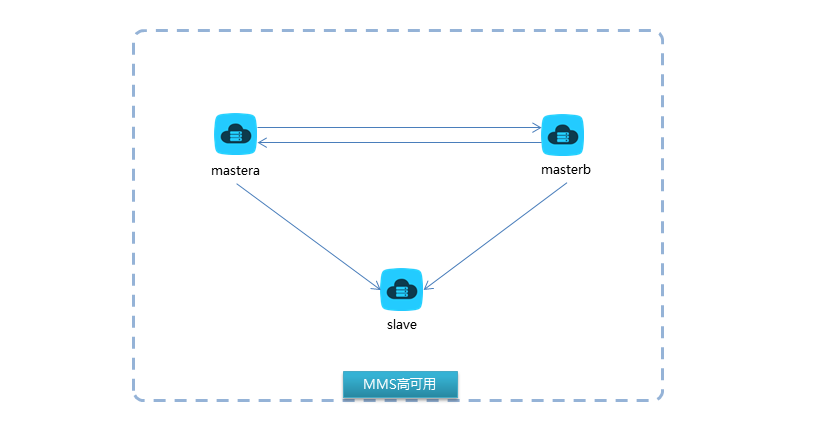

该文档注重搭建的实战，若需要学习每一个组件的原理可以参考最后的链接
1 架构图
keepalived实现haproxy的高可用
haproxy实现mycat的负载均衡和高可用 2台haproxy建议生产中和mycat服务分开 ，实验环境中由于虚拟机数量的限制，所以haproxy和mycat放在同一台上
mycat实现了数据库的读写分离、负载均衡、分库分表、自动故障转移
pxc集群实现了mysql高可用
mms双主多源复制实现mysql高可用
整套架构最终实现数据库的分布式架构，单表数据量在两个数据节点都不够存放时，可以再添加一个mysql集群节点，mycat中做相应配置即可实现水平扩展。
2 服务和节点规划 一共准备了6台虚拟机操作系统 RHEL 7.2（CentOS 7.2），有条件的化，建议准备10台虚拟机。
server
port
hostname
ip
PXC node1
3306
mastera0
172.25.0.11
PXC node2
3306
masterb0
172.25.0.12
PXC node3
3306
slavea0
172.25.0.13
MMS mastera
3306
slaveb0
172.25.0.14
MMS masterb
3306
dbproxy0
172.25.0.15
MMS slave
3306
workstation0
172.25.0.10
mycat_node1
8066
dbproxy0
172.25.0.15
mycat_node2
8066
workstation0
172.25.0.10
haproxy_01
7066
dbproxy0
172.25.0.15
haproxy_02
7066
workstation0
172.25.0.10
keepalived_master
vip:172.25.0.100
dbproxy0
172.25.0.15
keepalived_backup
vip:172.25.0.100
workstation0
172.25.0.10
3 软件准备
keepalived 使用系统自带yum源中的rpm包
haproxy 使用系统自带yum源中的rpm包
mycat 需要到mycat官网下载Mycat-server-1.5.1-RELEASE-20160328130228-linux.tar.gz 以及 oracle官网下载jdk-7u79-linux-x64.rpm 以及mysql官网下载mysql-connector-java-5.1.45.tar.gz
pxc和mms都使用percona公司的Percona-XtraDB-Cluster，在percona官网下载
innobackupex数据库物理备份工具在percona公司官网下载Percona-XtraBackup-2.3.4-re80c779-el7-x86_64-bundle.tar
下载后的包如下所示
# mycat jdk-7u79-linux-x64.rpm Mycat-server-1.5.1-RELEASE-20160328130228-linux.tar.gz Mycat_V1.6.0.pdf mysql-connector-java-5.1.45.tar.gz # innobackupex libev-4.15-6.el7.x86_64.rpm percona-xtrabackup-24-2.4.8-1.el7.x86_64.rpm # pxc Percona-XtraDB-Cluster-57-5.7.16-27.19.1.el7.x86_64.rpm Percona-XtraDB-Cluster-57-debuginfo-5.7.16-27.19.1.el7.x86_64.rpm Percona-XtraDB-Cluster-client-57-5.7.16-27.19.1.el7.x86_64.rpm Percona-XtraDB-Cluster-devel-57-5.7.16-27.19.1.el7.x86_64.rpm Percona-XtraDB-Cluster-full-57-5.7.16-27.19.1.el7.x86_64.rpm Percona-XtraDB-Cluster-garbd-57-5.7.16-27.19.1.el7.x86_64.rpm Percona-XtraDB-Cluster-server-57-5.7.16-27.19.1.el7.x86_64.rpm Percona-XtraDB-Cluster-shared-57-5.7.16-27.19.1.el7.x86_64.rpm Percona-XtraDB-Cluster-shared-compat-57-5.7.16-27.19.1.el7.x86_64.rpm Percona-XtraDB-Cluster-test-57-5.7.16-27.19.1.el7.x86_64.rpm galera-25.3.9-1.rhel7.el7.centos.x86_64.rpm jemalloc-3.6.0-1.el7.x86_64.rpm jemalloc-devel-3.6.0-1.el7.x86_64.rpm # 下面是自己通过createrepo命令生成的yum配置文件，若有疑问可以查一下【手动制作yum源】 pxc.repo repodata
4 PXC集群的搭建 percona xtradb cluster集群是基于引擎层的同步复制，所以数据一致性更高。
4.1 安装软件 auto_install_pxc.sh 脚本如下所示，需要在每一台pxc节点上安装。
# !/bin/bash systemctl stop firewalld systemctl disable firewalld sed -i 's/SELINUX=enforcing/SELINUX=disabled/' /etc/selinux/config setenforce 0 yum install -y wget net-tools vim # 此处是我自己搭建了一个局域网站实现pxc的局域网内的在线yum源 wget http://172.25.254.254/content/Git/DB100_mysql/sides/soft/cluster/pxc-cluster-el7/pxc.repo -P /etc/yum.repos.d/ yum clean all && yum makecache for i in `rpm -qa|grep mariadb`;do rpm -e --nodeps $i;done yum install -y percona-xtrabackup-24 Percona-XtraDB-Cluster-57 galera* jemalloc*
bash auto_install_pxc.sh
通过跳板机，远程操作多台机器，循环完成安装
for i in seq 10 15;do ssh-copy-id root@172.25.0.$i;done for i in seq 10 15;do scp auto_install_pxc.sh root@172.25.0.$i:~;done for i in seq 10 15;do ssh root@172.25.0.$i "bash auto_install_pxc.sh";done
4.2 pxc_node1 4.2.1 配置文件 # vim /etc/my.cnf grep -v '^#\|^$' /etc/my.cnf [client] socket=/var/lib/mysql/mysql.sock [mysqld] server-id=1 # server-id集群中每个节点保证唯一 datadir=/var/lib/mysql socket=/var/lib/mysql/mysql.sock log-error=/var/log/mysqld.log pid-file=/var/run/mysqld/mysqld.pid log-bin log_slave_updates expire_logs_days=7 symbolic-links=0 wsrep_provider=/usr/lib64/galera3/libgalera_smm.so wsrep_cluster_address=gcomm:// # 集群初始节点因此此处使用默认值即可 binlog_format=ROW default_storage_engine=InnoDB wsrep_slave_threads= 8 wsrep_log_conflicts innodb_autoinc_lock_mode=2 wsrep_cluster_name=pxc-cluster # 集群的名称，集群中所有节点保持一致 wsrep_node_name=pxc-cluster-node-1 # 集群节点的名称，自定义即可 pxc_strict_mode=ENFORCING wsrep_sst_method=rsync # 集群间同步数据的方式
4.4.2 启动服务 4.2.3 修改初始密码 password=`grep password /var/log/mysqld.log|awk '{print $11}'` mysqladmin -uroot -p$password password '(Uploo00king)'
4.2.3.1 密码修改失败处理 有时初始密码中若包含？& 很有可能不能修改成功，此时按照如下步骤即可
# 修改配置文件，跳过认证授权 vim my.cf [mysqld] skip-grant-tables # 重新启动服务 systemctl restart mysql # 登陆数据库服务器后修改密码 mysql > update mysql.user set authentication_string=password('(Uploo00king)'); # 修改配置文件去除参数 vim my.cf [mysqld] # skip-grant-tables # 重启服务 systemctl restart mysql
4.2.4 查看集群状态 mysql -uroot -p'(Uploo00king)' -e "show status like 'wsrep_cluster%'" mysql: [Warning] Using a password on the command line interface can be insecure. +--------------------------+--------------------------------------+ | Variable_name | Value | +--------------------------+--------------------------------------+ | wsrep_cluster_conf_id | 1 | | wsrep_cluster_size | 1 | | wsrep_cluster_state_uuid | 838b888e-0c95-11e8-9eaf-62dad1baf837 | | wsrep_cluster_status | Primary | +--------------------------+--------------------------------------+
4.3 pxc_node2 4.3.1 配置文件 vim /etc/my.cnf grep -v '^#\|^$' /etc/my.cnf [client] socket=/var/lib/mysql/mysql.sock [mysqld] server-id=2 datadir=/var/lib/mysql socket=/var/lib/mysql/mysql.sock log-error=/var/log/mysqld.log pid-file=/var/run/mysqld/mysqld.pid log-bin log_slave_updates expire_logs_days=7 symbolic-links=0 wsrep_provider=/usr/lib64/galera3/libgalera_smm.so wsrep_cluster_address="gcomm://172.25.0.11" binlog_format=ROW default_storage_engine=InnoDB wsrep_slave_threads= 8 wsrep_log_conflicts innodb_autoinc_lock_mode=2 wsrep_cluster_name=pxc-cluster wsrep_node_name=pxc-cluster-node-2 pxc_strict_mode=ENFORCING wsrep_sst_method=rsync
4.3.2 启动服务 4.3.3 修改初始密码 password=`grep password /var/log/mysqld.log|awk '{print $11}'` mysqladmin -uroot -p$password password '(Uploo00king)'
4.3.4 查看集群状态 mysql -uroot -p'(Uploo00king)' -e "show status like 'wsrep_cluster%'" mysql: [Warning] Using a password on the command line interface can be insecure. +--------------------------+--------------------------------------+ | Variable_name | Value | +--------------------------+--------------------------------------+ | wsrep_cluster_conf_id | 2 | | wsrep_cluster_size | 2 | | wsrep_cluster_state_uuid | 838b888e-0c95-11e8-9eaf-62dad1baf837 | | wsrep_cluster_status | Primary | +--------------------------+--------------------------------------+
4.4 pxc_node3 4.4.1 配置文件 vim /etc/my.cnf grep -v '^#\|^$' /etc/my.cnf [client] socket=/var/lib/mysql/mysql.sock [mysqld] server-id=3 datadir=/var/lib/mysql socket=/var/lib/mysql/mysql.sock log-error=/var/log/mysqld.log pid-file=/var/run/mysqld/mysqld.pid log-bin log_slave_updates expire_logs_days=7 symbolic-links=0 wsrep_provider=/usr/lib64/galera3/libgalera_smm.so wsrep_cluster_address="gcomm://172.25.0.11,172.25.0.12" binlog_format=ROW default_storage_engine=InnoDB wsrep_slave_threads= 8 wsrep_log_conflicts innodb_autoinc_lock_mode=2 wsrep_cluster_name=pxc-cluster wsrep_node_name=pxc-cluster-node-3 pxc_strict_mode=ENFORCING wsrep_sst_method=rsync
4.4.2 启动服务 4.4.3 修改初始密码 password=`grep password /var/log/mysqld.log|awk '{print $11}'` mysqladmin -uroot -p$password password '(Uploo00king)'
4.4.4 查看集群状态 mysql -uroot -p'(Uploo00king)' -e "show status like 'wsrep_cluster%'" mysql: [Warning] Using a password on the command line interface can be insecure. +--------------------------+--------------------------------------+ | Variable_name | Value | +--------------------------+--------------------------------------+ | wsrep_cluster_conf_id | 3 | | wsrep_cluster_size | 3 | | wsrep_cluster_state_uuid | 838b888e-0c95-11e8-9eaf-62dad1baf837 | | wsrep_cluster_status | Primary | +--------------------------+--------------------------------------+
4.4.5 集群宕机后重启 例如做实验的时候做到一半，就关机了，第二天再次启动虚拟机却发现集群无法启动了，执行一下步骤
systemctl stop mysql rm -rf /var/lib/mysql/grastate.dat systemctl start mysql
grastate.dat文件中记录着集群的状态信息，例如集群唯一标识，重新启动集群节点前删除该文件即可。
4.5 验证结果
从任意节点写入测试数据，所有节点都可以同步到
节点宕机后重新加入集群，可以自动同步增量数据
5 MMS高可用搭建 MMS是通过mysql的replication技术实现了异步复制，双主+多源复制的高可用。
此处使用的还是pxc的mysql5.7版本

5.1 mms_mastera 5.1.1 配置文件 vim /etc/my.cnf grep -v '^#\|^$' /etc/my.cnf [client] socket=/var/lib/mysql/mysql.sock [mysqld] server-id=1 # 确保mms架构中id的唯一性 datadir=/var/lib/mysql socket=/var/lib/mysql/mysql.sock log-error=/var/log/mysqld.log pid-file=/var/run/mysqld/mysqld.pid log-bin log_slave_updates expire_logs_days=7 symbolic-links=0 wsrep_provider=/usr/lib64/galera3/libgalera_smm.so wsrep_cluster_address=gcomm:// binlog_format=ROW default_storage_engine=InnoDB wsrep_slave_threads= 8 wsrep_log_conflicts innodb_autoinc_lock_mode=2 wsrep_cluster_name=mms-mastera # 由于此处使用集群版，就让每个主从节点都是一个独立的集群，每个节点取不同的名字即可 wsrep_node_name=pxc-cluster-node-1 pxc_strict_mode=ENFORCING wsrep_sst_method=rsync
5.1.2 启动服务 5.1.3 修改初始密码 password=`grep password /var/log/mysqld.log|awk '{print $11}'` mysqladmin -uroot -p$password password '(Uploo00king)'
5.1.4 添加授权 mysql -uroot -p'(Uploo00king)' -e "grant all on *.* to slave@'%' identified by '(Uploo00king)';flush privileges"
5.1.5 查看binlog位置 mysql -uroot -p'(Uploo00king)' -e " show master status\G;" *************************** 1. row *************************** File: slaveb0-bin.000002 Position: 847 Binlog_Do_DB: Binlog_Ignore_DB: Executed_Gtid_Set:
5.2 mms_masterb 5.2.1 配置文件 vim /etc/my.cnf grep -v '^#\|^$' /etc/my.cnf [client] socket=/var/lib/mysql/mysql.sock [mysqld] server-id=2 # 确保mms架构中id的唯一性 datadir=/var/lib/mysql socket=/var/lib/mysql/mysql.sock log-error=/var/log/mysqld.log pid-file=/var/run/mysqld/mysqld.pid log-bin log_slave_updates expire_logs_days=7 symbolic-links=0 wsrep_provider=/usr/lib64/galera3/libgalera_smm.so wsrep_cluster_address=gcomm:// binlog_format=ROW default_storage_engine=InnoDB wsrep_slave_threads= 8 wsrep_log_conflicts innodb_autoinc_lock_mode=2 wsrep_cluster_name=mms-masterb # 由于此处使用集群版，就让每个主从节点都是一个独立的集群，每个节点取不同的名字即可 wsrep_node_name=pxc-cluster-node-1 pxc_strict_mode=ENFORCING wsrep_sst_method=rsync
5.2.2 启动服务 5.2.3 修改初始密码 password=`grep password /var/log/mysqld.log|awk '{print $11}'` mysqladmin -uroot -p$password password '(Uploo00king)'
5.2.4 添加授权 mysql -uroot -p'(Uploo00king)' -e "grant all on *.* to slave@'%' identified by '(Uploo00king)';flush privileges"
5.2.5 宣告主库 mysql> change master to master_host='172.25.0.14' ,master_user='slave' ,master_password='(Uploo00king)' ,master_log_file='slaveb0-bin.000002' ,master_log_pos=847;
5.2.6 启动从服务 5.2.7 查看从服务状态 mysql> show slave status\G; *************************** 1. row *************************** Slave_IO_State: Waiting for master to send event Master_Host: 172.25.0.14 Master_User: slave Master_Port: 3306 Connect_Retry: 60 Master_Log_File: slaveb0-bin.000002 Read_Master_Log_Pos: 847 Relay_Log_File: dbproxy0-relay-bin.000002 Relay_Log_Pos: 322 Relay_Master_Log_File: slaveb0-bin.000002 Slave_IO_Running: Yes Slave_SQL_Running: Yes Replicate_Do_DB: Replicate_Ignore_DB: Replicate_Do_Table: Replicate_Ignore_Table: Replicate_Wild_Do_Table: Replicate_Wild_Ignore_Table: Last_Errno: 0 Last_Error: Skip_Counter: 0 Exec_Master_Log_Pos: 847 Relay_Log_Space: 532 Until_Condition: None Until_Log_File: Until_Log_Pos: 0 Master_SSL_Allowed: No Master_SSL_CA_File: Master_SSL_CA_Path: Master_SSL_Cert: Master_SSL_Cipher: Master_SSL_Key: Seconds_Behind_Master: 0 Master_SSL_Verify_Server_Cert: No Last_IO_Errno: 0 Last_IO_Error: Last_SQL_Errno: 0 Last_SQL_Error: Replicate_Ignore_Server_Ids: Master_Server_Id: 1 Master_UUID: fa24bb7f-0c99-11e8-a8fa-52540000000e Master_Info_File: /var/lib/mysql/master.info SQL_Delay: 0 SQL_Remaining_Delay: NULL Slave_SQL_Running_State: Slave has read all relay log; waiting for more updates Master_Retry_Count: 86400 Master_Bind: Last_IO_Error_Timestamp: Last_SQL_Error_Timestamp: Master_SSL_Crl: Master_SSL_Crlpath: Retrieved_Gtid_Set: Executed_Gtid_Set: Auto_Position: 0 Replicate_Rewrite_DB: Channel_Name: Master_TLS_Version:
5.2.8 查看binlog位置 mysql -uroot -p'(Uploo00king)' -e " show master status\G;" *************************** 1. row *************************** File: dbproxy0-bin.000002 Position: 847 Binlog_Do_DB: Binlog_Ignore_DB: Executed_Gtid_Set:
5.3 mms_slave 这台mysql实例将配置两个主库，叫做多源复制，该技术从mysql5.7版本才有，需要在从库上添加两个参数
master-info-repository=table # 开启多源复制需要将主库信息以表格的方式存放 relay-log-info-repository=table # 开启多源复制需要将中继日志信息以表格方式存放
5.3.1 配置文件 vim /etc/my.cnf grep -v '^#\|^$' /etc/my.cnf [client] socket=/var/lib/mysql/mysql.sock [mysqld] server-id=3 master-info-repository=table # 开启多源复制需要将主库信息以表格的方式存放 relay-log-info-repository=table # 开启多源复制需要将中继日志信息以表格方式存放 datadir=/var/lib/mysql socket=/var/lib/mysql/mysql.sock log-error=/var/log/mysqld.log pid-file=/var/run/mysqld/mysqld.pid log-bin log_slave_updates expire_logs_days=7 symbolic-links=0 wsrep_provider=/usr/lib64/galera3/libgalera_smm.so wsrep_cluster_address=gcomm:// binlog_format=ROW default_storage_engine=InnoDB wsrep_slave_threads= 8 wsrep_log_conflicts innodb_autoinc_lock_mode=2 wsrep_cluster_name=mms-slave wsrep_node_name=pxc-cluster-node-1 pxc_strict_mode=ENFORCING wsrep_sst_method=rsync
5.3.2 启动服务 5.3.3 修改初始密码 password=`grep password /var/log/mysqld.log|awk '{print $11}'` mysqladmin -uroot -p$password password '(Uploo00king)'
5.3.4 宣告主库 先配置mastera为主，稍后会再配置masterb
mysql> change master to master_host='172.25.0.14' ,master_user='slave' ,master_password='(Uploo00king)' ,master_log_file='slaveb0-bin.000002' ,master_log_pos=847 for channel "channela" ;
5.4 mms_mastera 配置mms_masterb为mms_mastera的主
5.4.1 宣告主库 mysql > change master to master_host='172.25.0.15',master_user='slave',master_password='(Uploo00king)',master_log_file='dbproxy0-bin.000002',master_log_pos=847;
5.4.2 启动从服务 5.4.3 查看从服务状态 mysql> show slave status\G; *************************** 1. row *************************** Slave_IO_State: Waiting for master to send event Master_Host: 172.25.0.15 Master_User: slave Master_Port: 3306 Connect_Retry: 60 Master_Log_File: dbproxy0-bin.000002 Read_Master_Log_Pos: 847 Relay_Log_File: slaveb0-relay-bin.000002 Relay_Log_Pos: 323 Relay_Master_Log_File: dbproxy0-bin.000002 Slave_IO_Running: Yes Slave_SQL_Running: Yes Replicate_Do_DB: Replicate_Ignore_DB: Replicate_Do_Table: Replicate_Ignore_Table: Replicate_Wild_Do_Table: Replicate_Wild_Ignore_Table: Last_Errno: 0 Last_Error: Skip_Counter: 0 Exec_Master_Log_Pos: 847 Relay_Log_Space: 532 Until_Condition: None Until_Log_File: Until_Log_Pos: 0 Master_SSL_Allowed: No Master_SSL_CA_File: Master_SSL_CA_Path: Master_SSL_Cert: Master_SSL_Cipher: Master_SSL_Key: Seconds_Behind_Master: 0 Master_SSL_Verify_Server_Cert: No Last_IO_Errno: 0 Last_IO_Error: Last_SQL_Errno: 0 Last_SQL_Error: Replicate_Ignore_Server_Ids: Master_Server_Id: 2 Master_UUID: 669832f0-0c9b-11e8-b46e-52540000000f Master_Info_File: /var/lib/mysql/master.info SQL_Delay: 0 SQL_Remaining_Delay: NULL Slave_SQL_Running_State: Slave has read all relay log; waiting for more updates Master_Retry_Count: 86400 Master_Bind: Last_IO_Error_Timestamp: Last_SQL_Error_Timestamp: Master_SSL_Crl: Master_SSL_Crlpath: Retrieved_Gtid_Set: Executed_Gtid_Set: Auto_Position: 0 Replicate_Rewrite_DB: Channel_Name: Master_TLS_Version: 1 row in set (0.00 sec)
5.5 mms_slave 配置mms_masterb成为mms_slave的第二个主
####5.5.1 宣告主库
mysql > change master to master_host='172.25.0.15',master_user='slave',master_password='(Uploo00king)',master_log_file='dbproxy0-bin.000002',master_log_pos=847 for channel "channelb";
5.5.2 启动从服务 5.5.3 查看从服务状态 mysql> show slave status\G; *************************** 1. row *************************** Slave_IO_State: Waiting for master to send event Master_Host: 172.25.0.14 Master_User: slave Master_Port: 3306 Connect_Retry: 60 Master_Log_File: slaveb0-bin.000002 Read_Master_Log_Pos: 847 Relay_Log_File: workstation0-relay-bin-channela.000002 Relay_Log_Pos: 322 Relay_Master_Log_File: slaveb0-bin.000002 Slave_IO_Running: Yes Slave_SQL_Running: Yes Replicate_Do_DB: Replicate_Ignore_DB: Replicate_Do_Table: Replicate_Ignore_Table: Replicate_Wild_Do_Table: Replicate_Wild_Ignore_Table: Last_Errno: 0 Last_Error: Skip_Counter: 0 Exec_Master_Log_Pos: 847 Relay_Log_Space: 545 Until_Condition: None Until_Log_File: Until_Log_Pos: 0 Master_SSL_Allowed: No Master_SSL_CA_File: Master_SSL_CA_Path: Master_SSL_Cert: Master_SSL_Cipher: Master_SSL_Key: Seconds_Behind_Master: 0 Master_SSL_Verify_Server_Cert: No Last_IO_Errno: 0 Last_IO_Error: Last_SQL_Errno: 0 Last_SQL_Error: Replicate_Ignore_Server_Ids: Master_Server_Id: 1 Master_UUID: fa24bb7f-0c99-11e8-a8fa-52540000000e Master_Info_File: mysql.slave_master_info SQL_Delay: 0 SQL_Remaining_Delay: NULL Slave_SQL_Running_State: Slave has read all relay log; waiting for more updates Master_Retry_Count: 86400 Master_Bind: Last_IO_Error_Timestamp: Last_SQL_Error_Timestamp: Master_SSL_Crl: Master_SSL_Crlpath: Retrieved_Gtid_Set: Executed_Gtid_Set: Auto_Position: 0 Replicate_Rewrite_DB: Channel_Name: channela Master_TLS_Version: *************************** 2. row *************************** Slave_IO_State: Waiting for master to send event Master_Host: 172.25.0.15 Master_User: slave Master_Port: 3306 Connect_Retry: 60 Master_Log_File: dbproxy0-bin.000002 Read_Master_Log_Pos: 847 Relay_Log_File: workstation0-relay-bin-channelb.000002 Relay_Log_Pos: 323 Relay_Master_Log_File: dbproxy0-bin.000002 Slave_IO_Running: Yes Slave_SQL_Running: Yes Replicate_Do_DB: Replicate_Ignore_DB: Replicate_Do_Table: Replicate_Ignore_Table: Replicate_Wild_Do_Table: Replicate_Wild_Ignore_Table: Last_Errno: 0 Last_Error: Skip_Counter: 0 Exec_Master_Log_Pos: 847 Relay_Log_Space: 546 Until_Condition: None Until_Log_File: Until_Log_Pos: 0 Master_SSL_Allowed: No Master_SSL_CA_File: Master_SSL_CA_Path: Master_SSL_Cert: Master_SSL_Cipher: Master_SSL_Key: Seconds_Behind_Master: 0 Master_SSL_Verify_Server_Cert: No Last_IO_Errno: 0 Last_IO_Error: Last_SQL_Errno: 0 Last_SQL_Error: Replicate_Ignore_Server_Ids: Master_Server_Id: 2 Master_UUID: 669832f0-0c9b-11e8-b46e-52540000000f Master_Info_File: mysql.slave_master_info SQL_Delay: 0 SQL_Remaining_Delay: NULL Slave_SQL_Running_State: Slave has read all relay log; waiting for more updates Master_Retry_Count: 86400 Master_Bind: Last_IO_Error_Timestamp: Last_SQL_Error_Timestamp: Master_SSL_Crl: Master_SSL_Crlpath: Retrieved_Gtid_Set: Executed_Gtid_Set: Auto_Position: 0 Replicate_Rewrite_DB: Channel_Name: channelb Master_TLS_Version: 2 rows in set (0.00 sec)
5.6 验证结果
从主节点写入测试数据，所有节点都可以同步到
从节点既能同步mastera的数据，也能同步masterb的数据
主节点任意一个宕机后，重新加入需要从节点重启slave服务
从节点宕机后，重新加入即可自动同步数据
6 MyCAT数据库中间件的搭建 MyCAT前身是阿里巴巴的cobar，目前是国内高并发高性能的开源中间件。
在该架构中担负着数据库读写分离、负载均衡、分库分表、自动故障转移的重要角色。
6.1 软件安装 准备auto_install_mycat.sh安装脚本，分别在mycat_01和mycat_02上完成安装。
# !/bin/bash mkdir /alidata/install -p mkdir /alidata/mycat # 软件的连接我用的自己局域网的rpm包，你需要自己找资源下载 wget http://172.25.254.254/content/Git/DB100_mysql/sides/soft/pxcmycat/jdk-7u79-linux-x64.rpm -P /alidata/install wget http://172.25.254.254/content/Git/DB100_mysql/sides/soft/pxcmycat/Mycat-server-1.5.1-RELEASE-20160328130228-linux.tar.gz -P /alidata/install wget http://172.25.254.254/content/Git/DB100_mysql/sides/soft/pxcmycat/mysql-connector-java-5.1.45.tar.gz -P /alidata/install cd /alidata/install rpm -ivh jdk-7u79-linux-x64.rpm tar -xf Mycat-server-1.5.1-RELEASE-20160328130228-linux.tar.gz mv mycat /alidata/ tar -xf mysql-connector-java-5.1.45.tar.gz cp mysql-connector-java-5.1.45/mysql-connector-java-5.1.45-bin.jar /alidata/mycat/lib chmod a+x /alidata/mycat/lib/mysql-connector-java-5.1.45-bin.jar cat >> /etc/bashrc << ENDF export JAVA_HOME=/usr/java/jdk1.7.0_79/ export PATH=\$PATH:/alidata/mycat/bin ENDF source /etc/bashrc
bash auto_install_mycat.sh
for i in `seq 10 15`;do scp auto_install_mycat.sh root@172.25.0.$i:~;done for i in `seq 10 15`;do ssh root@172.25.0.$i "bash auto_install_mycat.sh";done
注意：java的路径需要在bash的启动配置中宣告
6.2 配置文件 6.2.1 配置文件概览
文件名
文件简介
server.xml
mycat的认证权限、服务监听等配置
schema.xml
mycat逻辑库对应的数据库节点配置（负载均衡、读写分离、分库分表、自动故障转移等）
rule.xml
mycat分库分表的算法
6.2.2 配置目标 6.2.2.1 分库分表
ecshop库中的t2表一共分了16个库
16个库对应16个datanode数据节点
每个节点有对应的后端数据库实例的库名
后端有两个高可用架构pxc和mms组成
每个高可用架构提供db2_01~db2_08一共8个库
6.2.2.2 读写分离
pxc读写分离机制为：node1写，node2和node3读
mms读写分离机制为：mastera写，masterb和slave读
6.2.2.3 负载均衡
pxc：读请求随机分配给node2和node3
mms：读请求随机分配给masterb和slave读
6.2.2.4 自动故障转移
pxc的心跳检测show status like 'wsrep%'
mms的心跳检测select user()
6.2.2.5 mycat连接mysql驱动
mycat连接pxc使用的驱动为：native
mycat连接mms使用驱动为：jdbc
6.2.3 server.xml
用户名和密码 root/uplooking
逻辑库名 ecshop
数据监听端口 8066
管理监听端口 9066
<?xml version="1.0" encoding="UTF-8"?> <!-- - - Licensed under the Apache License, Version 2.0 (the "License"); - you may not use this file except in compliance with the License. - You may obtain a copy of the License at - - http://www.apache.org/licenses/LICENSE-2.0 - - Unless required by applicable law or agreed to in writing, software - distributed under the License is distributed on an "AS IS" BASIS, - WITHOUT WARRANTIES OR CONDITIONS OF ANY KIND, either express or implied. - See the License for the specific language governing permissions and - limitations under the License. --> <!DOCTYPE mycat:server SYSTEM "server.dtd"> <mycat:server xmlns:mycat="http://org.opencloudb/"> <system> <property name="defaultSqlParser">druidparser</property> <property name="serverPort">8066</property> <property name="managerPort">9066</property> <!-- <property name="useCompression">1</property>--> <!--1为开启mysql压缩协议--> <!-- <property name="processorBufferChunk">40960</property> --> <!-- <property name="processors">1</property> <property name="processorExecutor">32</property> --> <!--默认是65535 64K 用于sql解析时最大文本长度 --> <!--<property name="maxStringLiteralLength">65535</property>--> <!--<property name="sequnceHandlerType">0</property>--> <!--<property name="backSocketNoDelay">1</property>--> <!--<property name="frontSocketNoDelay">1</property>--> <!--<property name="processorExecutor">16</property>--> <!-- <property name="mutiNodeLimitType">1</property> 0：开启小数量级（默认） ；1：开启亿级数据排序 <property name="mutiNodePatchSize">100</property> 亿级数量排序批量 <property name="processors">32</property> <property name="processorExecutor">32</property> <property name="idleTimeout">300000</property> <property name="bindIp">0.0.0.0</property> <property name="frontWriteQueueSize">4096</property> <property name="processors">32</property> --> </system> <user name="root"> <property name="password">uplooking</property> <property name="schemas">ecshop</property> </user> <user name="user"> <property name="password">user</property> <property name="schemas">ecshop</property> <property name="readOnly">true</property> </user> <!-- <quarantine> <whitehost> <host host="127.0.0.1" user="mycat"/> <host host="127.0.0.2" user="mycat"/> </whitehost> <blacklist check="false"></blacklist> </quarantine> --> </mycat:server>
6.2.4 schema.xml 逻辑库ecshop的物理节点配置明细：
<?xml version="1.0"?> <!DOCTYPE mycat:schema SYSTEM "schema.dtd"> <mycat:schema xmlns:mycat="http://org.opencloudb/"> <schema name="ecshop" checkSQLschema="false" sqlMaxLimit="100"> <table name='t2' primaryKey='id' dataNode="dn1,dn2,dn3,dn4,dn5,dn6,dn7,dn8,dn9,dn10,dn11,dn12,dn13,dn14,dn15,dn16" rule='auto-sharding-long'/> </schema> <dataNode name="dn1" dataHost="pxc-cluster-1" database="db2_01" /> <dataNode name="dn2" dataHost="pxc-cluster-1" database="db2_02" /> <dataNode name="dn3" dataHost="pxc-cluster-1" database="db2_03" /> <dataNode name="dn4" dataHost="pxc-cluster-1" database="db2_04" /> <dataNode name="dn5" dataHost="pxc-cluster-1" database="db2_05" /> <dataNode name="dn6" dataHost="pxc-cluster-1" database="db2_06" /> <dataNode name="dn7" dataHost="pxc-cluster-1" database="db2_07" /> <dataNode name="dn8" dataHost="pxc-cluster-1" database="db2_08" /> <dataNode name="dn9" dataHost="mms" database="db2_01" /> <dataNode name="dn10" dataHost="mms" database="db2_02" /> <dataNode name="dn11" dataHost="mms" database="db2_03" /> <dataNode name="dn12" dataHost="mms" database="db2_04" /> <dataNode name="dn13" dataHost="mms" database="db2_05" /> <dataNode name="dn14" dataHost="mms" database="db2_06" /> <dataNode name="dn15" dataHost="mms" database="db2_07" /> <dataNode name="dn16" dataHost="mms" database="db2_08" /> <dataHost name="pxc-cluster-1" maxCon="1000" minCon="10" balance="1" writeType="0" dbType="mysql" dbDriver="native" switchType="3" slaveThreshold="100"> <heartbeat>show status like 'wsrep%'</heartbeat> <writeHost host="mastera0" url="172.25.0.11:3306" user="mycat" password="(Uploo00king)"> </writeHost> <writeHost host="masterb0" url="172.25.0.12:3306" user="mycat" password="(Uploo00king)"> </writeHost> <writeHost host="slavea0" url="172.25.0.13:3306" user="mycat" password="(Uploo00king)"> </writeHost> </dataHost> <dataHost name="mms" maxCon="1000" minCon="10" balance="1" dbType="mysql" dbDriver="jdbc"> <heartbeat>select user()</heartbeat> <writeHost host="slaveb0" url="jdbc:mysql://172.25.0.14:3306" user="mycat" password="(Uploo00king)"> <readHost host="workstation0" url="jdbc:mysql://172.25.0.10:3306" user="mycat" password="(Uploo00king)"/> </writeHost> <writeHost host="dbproxy0" url="jdbc:mysql://172.25.0.15:3306" user="mycat" password="(Uploo00king)"> <readHost host="workstation0" url="jdbc:mysql://172.25.0.10:3306" user="mycat" password="(Uploo00king)"/> </writeHost> </dataHost> </mycat:schema>
6.2.5 rule.xml t2表选择的分库规则为rule='auto-sharding-long'
<tableRule name="auto-sharding-long">
<rule>
<columns>id</columns>
<algorithm>rang-long</algorithm>
</rule>
</tableRule>
该规则使用的分库键为t2的id列；
该规则使用的算法为rang-long
autopartition-long.txt 16 8
mapFile：算法明细存放于autopartition-long.txt文件
count：要分片的数据库节点数量，必须指定，否则没法分片
defaultNode：如果没有匹配到规则默认将数据写入哪个分片节点
详细配置如下：
<?xml version="1.0" encoding="UTF-8"?> <!-- - - Licensed under the Apache License, Version 2.0 (the "License"); - you may not use this file except in compliance with the License. - You may obtain a copy of the License at - - http://www.apache.org/licenses/LICENSE-2.0 - - Unless required by applicable law or agreed to in writing, software - distributed under the License is distributed on an "AS IS" BASIS, - WITHOUT WARRANTIES OR CONDITIONS OF ANY KIND, either express or implied. - See the License for the specific language governing permissions and - limitations under the License. --> <!DOCTYPE mycat:rule SYSTEM "rule.dtd"> <mycat:rule xmlns:mycat="http://org.opencloudb/"> <tableRule name="rule1"> <rule> <columns>id</columns> <algorithm>func1</algorithm> </rule> </tableRule> <tableRule name="rule2"> <rule> <columns>user_id</columns> <algorithm>func1</algorithm> </rule> </tableRule> <tableRule name="sharding-by-intfile"> <rule> <columns>id</columns> <algorithm>hash-int</algorithm> </rule> </tableRule> <tableRule name="auto-sharding-long"> <rule> <columns>id</columns> <algorithm>rang-long</algorithm> </rule> </tableRule> <tableRule name="mod-long"> <rule> <columns>id</columns> <algorithm>mod-long</algorithm> </rule> </tableRule> <tableRule name="sharding-by-murmur"> <rule> <columns>id</columns> <algorithm>murmur</algorithm> </rule> </tableRule> <tableRule name="sharding-by-month"> <rule> <columns>create_date</columns> <algorithm>partbymonth</algorithm> </rule> </tableRule> <tableRule name="latest-month-calldate"> <rule> <columns>calldate</columns> <algorithm>latestMonth</algorithm> </rule> </tableRule> <tableRule name="auto-sharding-rang-mod"> <rule> <columns>id</columns> <algorithm>rang-mod</algorithm> </rule> </tableRule> <tableRule name="jch"> <rule> <columns>id</columns> <algorithm>jump-consistent-hash</algorithm> </rule> </tableRule> <function name="murmur" class="org.opencloudb.route.function.PartitionByMurmurHash"> <property name="seed">0</property><!-- 默认是0 --> <property name="count">16</property><!-- 要分片的数据库节点数量，必须指定，否则没法分片 --> <property name="virtualBucketTimes">160</property><!-- 一个实际的数据库节点被映射为这么多虚拟节点，默认是160倍，也就是虚拟节点数是物理节点数的160倍 --> <!-- <property name="weightMapFile">weightMapFile</property> 节点的权重，没有指定权重的节点默认是1。以properties文件的格式填写，以从0开始到count-1的整数值也就是节点索引为key，以节点权重值为值。所有权重值必须是正整数，否则以1代替 --> <!-- <property name="bucketMapPath">/etc/mycat/bucketMapPath</property> 用于测试时观察各物理节点与虚拟节点的分布情况，如果指定了这个属性，会把虚拟节点的murmur hash值与物理节点的映射按行输出到这个文件，没有默认值，如果不指定，就不会输出任何东西 --> </function> <function name="hash-int" class="org.opencloudb.route.function.PartitionByFileMap"> <property name="count">16</property><!-- 要分片的数据库节点数量，必须指定，否则没法分片 --> <property name="mapFile">partition-hash-int.txt</property> <property name="defaultNode">8</property> </function> <function name="rang-long" class="org.opencloudb.route.function.AutoPartitionByLong"> <property name="mapFile">autopartition-long.txt</property> <property name="count">16</property> <property name="defaultNode">8</property> </function> <function name="mod-long" class="org.opencloudb.route.function.PartitionByMod"> <!-- how many data nodes --> <property name="count">16</property> </function> <function name="func1" class="org.opencloudb.route.function.PartitionByLong"> <property name="partitionCount">8</property> <property name="partitionLength">128</property> </function> <function name="latestMonth" class="org.opencloudb.route.function.LatestMonthPartion"> <property name="splitOneDay">24</property> </function> <function name="partbymonth" class="org.opencloudb.route.function.PartitionByMonth"> <property name="dateFormat">yyyy-MM-dd</property> <property name="sBeginDate">2015-01-01</property> </function> <function name="rang-mod" class="org.opencloudb.route.function.PartitionByRangeMod"> <property name="mapFile">partition-range-mod.txt</property> <property name="count">16</property><!-- 要分片的数据库节点数量，必须指定，否则没法分片 --> <property name="defaultNode">0</property> </function> <function name="jump-consistent-hash" class="org.opencloudb.route.function.PartitionByJumpConsistentHash"> <property name="totalBuckets">3</property> </function> </mycat:rule>
6.2.6 autopartition-long.txt 若id在0-1000,则存放于0号分片节点；
若id在10000-20000，则存放于1号分片节点；
以此类推。
如何知晓后端节点为几号分片呢？
例如此处schema.xml配置中存在16个datanode，分别为dn1,dn2,dn3..dn16;那么dn1就是0号分片，dn2为1号分片，一次类推dn16就是第15号分片节点。
详细配置如下：
# range start-end ,data node index # K=1000,M=10000. 0-1M=0 1M-2M=1 2M-3M=2 3M-4M=3 4M-5M=4 5M-6M=5 6M-7M=6 7M-8M=7 8M-9M=8 9M-10M=9 10M-11M=10 11M-12M=11 12M-13M=12 13M-14M=13 14M-15M=14 15M-16M=15
这里特别强调一下分片规则的选择问题，如果某个表的数据有明显的时间特征，比如订单、交易记录等，则他们通常比较合适用时间范围分片，因为具有时效性的数据，我们往往关注其近期的数据，查询条件中往往带有时间字段进行过滤，比较好的方案是，当前活跃的数据，采用跨度比较短的时间段进行分片，而历史性的数据，则采用比较长的跨度存储。
总体上来说，分片的选择是取决于最频繁的查询SQL的条件，因为不带任何Where语句的查询SQL，会便利所有的分片，性能相对最差，因此这种SQL越多，对系统的影响越大，所以我们要尽量避免这种SQL的产生。
6.3 数据库实例 6.3.1 添加对mycat的授权 pxc 和 mms 都需要执行：
grant all on *.* to mycat@'%' identified by '(Uploo00king)'; flush privileges;
6.3.2 建库建表 根据分库分表的规则，在后端数据库集群实例中建库建表。本实例中只做了分库，没有做分表，如果分表那么create table的时候在末尾添加分表属性PARTITION BY即可。
分表例如：
CREATE TABLE `fx_achievement_p` ( `id` int(11) NOT NULL AUTO_INCREMENT , `user_key` varchar(45) DEFAULT NULL, `card_level` varchar(1) DEFAULT NULL, `pay_date` datetime , primary key (id,pay_date), ) ENGINE=InnoDB AUTO_INCREMENT=13828002 DEFAULT CHARSET=utf8 PARTITION BY RANGE(TO_DAYS(pay_date)) (PARTITION p1 VALUES LESS THAN (TO_DAYS('2016-12-01'))ENGINE = InnoDB, PARTITION p2 VALUES LESS THAN (TO_DAYS('2017-01-01'))ENGINE = InnoDB, PARTITION p3 VALUES LESS THAN (TO_DAYS('2017-02-01'))ENGINE = InnoDB, PARTITION p4 VALUES LESS THAN (TO_DAYS('2017-03-01'))ENGINE = InnoDB, PARTITION p5 VALUES LESS THAN (TO_DAYS('2017-04-01'))ENGINE = InnoDB, PARTITION pall VALUES LESS THAN maxvalue ENGINE = InnoDB);
pxc 和 mms 分别建8个库，每个库中建相同结构的表，此处脚本批量完成。
initmysql.sh
# !/bin/bash > init.sql for i in `seq 1 8` do echo "create database db2_0${i};" >> init.sql echo "use db2_0${i};" >> init.sql echo "create table t2 (id int primary key,name varchar(30));" >> init.sql done
运行initmysql.sh后在当前目录下生成init.sql文件
create database db2_01; use db2_01; create table t2 (id int primary key,name varchar(30)); create database db2_02; use db2_02; create table t2 (id int primary key,name varchar(30)); create database db2_03; use db2_03; create table t2 (id int primary key,name varchar(30)); create database db2_04; use db2_04; create table t2 (id int primary key,name varchar(30)); create database db2_05; use db2_05; create table t2 (id int primary key,name varchar(30)); create database db2_06; use db2_06; create table t2 (id int primary key,name varchar(30)); create database db2_07; use db2_07; create table t2 (id int primary key,name varchar(30)); create database db2_08; use db2_08; create table t2 (id int primary key,name varchar(30));
将init.sql文件导入数据库
mysql -uroot -p'(Uploo00king)' < init.sql
6.4 启动mycat服务 6.4.1 启动服务 6.4.2 查看守护进程 ps -ef|grep java root 18334 18332 7 15:54 ? 00:00:06 java -DMYCAT_HOME=. -server -XX:MaxPermSize=64M -XX:+AggressiveOpts -XX:MaxDirectMemorySize=2G -Dcom.sun.management.jmxremote -Dcom.sun.management.jmxremote.port=1984 -Dcom.sun.management.jmxremote.authenticate=false -Dcom.sun.management.jmxremote.ssl=false -Xmx4G -Xms1G -Djava.library.path=lib -classpath lib/wrapper.jar:conf:lib/zookeeper-3.4.6.jar:lib/jline-0.9.94.jar:lib/ehcache-core-2.6.11.jar:lib/log4j-1.2.17.jar:lib/guava-18.0.jar:lib/libwrapper-linux-x86-32.so:lib/netty-3.7.0.Final.jar:lib/mapdb-1.0.7.jar:lib/xml-apis-1.0.b2.jar:lib/slf4j-api-1.7.12.jar:lib/leveldb-api-0.7.jar:lib/wrapper.jar:lib/slf4j-log4j12-1.7.12.jar:lib/json-20151123.jar:lib/curator-framework-2.9.0.jar:lib/mongo-java-driver-2.11.4.jar:lib/druid-1.0.14.jar:lib/libwrapper-linux-ppc-64.so:lib/Mycat-server-1.5.1-RELEASE.jar:lib/leveldb-0.7.jar:lib/fastjson-1.2.7.jar:lib/sequoiadb-java-driver-1.0-20150615.070208-1.jar:lib/snakeyaml-1.16.jar:lib/univocity-parsers-1.5.4.jar:lib/curator-client-2.9.0.jar:lib/libwrapper-linux-x86-64.so:lib/dom4j-1.6.1.jar:lib/mysql-connector-java-5.1.45-bin.jar -Dwrapper.key=eOdzGSNOEVR9mMJA -Dwrapper.port=32000 -Dwrapper.jvm.port.min=31000 -Dwrapper.jvm.port.max=31999 -Dwrapper.pid=18332 -Dwrapper.version=3.2.3 -Dwrapper.native_library=wrapper -Dwrapper.service=TRUE -Dwrapper.cpu.timeout=10 -Dwrapper.jvmid=1 org.tanukisoftware.wrapper.WrapperSimpleApp org.opencloudb.MycatStartup start root 18422 17766 0 15:56 pts/0 00:00:00 grep --color=auto java
6.4.3 查看监听 ss -luntp|grep java tcp LISTEN 0 1 127.0.0.1:32000 *:* users:(("java",pid=18334,fd=4)) tcp LISTEN 0 100 :::9066 :::* users:(("java",pid=18334,fd=56)) tcp LISTEN 0 50 :::59601 :::* users:(("java",pid=18334,fd=39)) tcp LISTEN 0 50 :::36030 :::* users:(("java",pid=18334,fd=37)) tcp LISTEN 0 50 :::1984 :::* users:(("java",pid=18334,fd=38)) tcp LISTEN 0 100 :::8066 :::* users:(("java",pid=18334,fd=60))
6.5 验证结果 分别连接mycat_01和mycat_02的8066和9066端口
6.5.1 验证mycat_01 [root@dbproxy0 conf]# mysql -uroot -puplooking -h172.25.0.10 -P8066 -e "show databases" mysql: [Warning] Using a password on the command line interface can be insecure. +----------+ | DATABASE | +----------+ | ecshop | +----------+ [root@dbproxy0 conf]# mysql -uroot -puplooking -h172.25.0.10 -P8066 ecshop -e "show tables;" mysql: [Warning] Using a password on the command line interface can be insecure. +------------------+ | Tables in ecshop | +------------------+ | t2 | +------------------+ [root@dbproxy0 conf]# mysql -uroot -puplooking -h172.25.0.10 -P9066 -e "show @@datanode" mysql: [Warning] Using a password on the command line interface can be insecure. +------+----------------------+-------+-------+--------+------+------+---------+------------+----------+---------+---------------+ | NAME | DATHOST | INDEX | TYPE | ACTIVE | IDLE | SIZE | EXECUTE | TOTAL_TIME | MAX_TIME | MAX_SQL | RECOVERY_TIME | +------+----------------------+-------+-------+--------+------+------+---------+------------+----------+---------+---------------+ | dn1 | pxc-cluster-1/db2_01 | 0 | mysql | 0 | 2 | 1000 | 20 | 0 | 0 | 0 | -1 | | dn10 | mms/db2_02 | 0 | mysql | 0 | 1 | 1000 | 1 | 0 | 0 | 0 | -1 | | dn11 | mms/db2_03 | 0 | mysql | 0 | 1 | 1000 | 1 | 0 | 0 | 0 | -1 | | dn12 | mms/db2_04 | 0 | mysql | 0 | 1 | 1000 | 1 | 0 | 0 | 0 | -1 | | dn13 | mms/db2_05 | 0 | mysql | 0 | 1 | 1000 | 1 | 0 | 0 | 0 | -1 | | dn14 | mms/db2_06 | 0 | mysql | 0 | 1 | 1000 | 1 | 0 | 0 | 0 | -1 | | dn15 | mms/db2_07 | 0 | mysql | 0 | 2 | 1000 | 2 | 0 | 0 | 0 | -1 | | dn16 | mms/db2_08 | 0 | mysql | 0 | 2 | 1000 | 2 | 0 | 0 | 0 | -1 | | dn2 | pxc-cluster-1/db2_02 | 0 | mysql | 0 | 1 | 1000 | 1 | 0 | 0 | 0 | -1 | | dn3 | pxc-cluster-1/db2_03 | 0 | mysql | 0 | 2 | 1000 | 2 | 0 | 0 | 0 | -1 | | dn4 | pxc-cluster-1/db2_04 | 0 | mysql | 0 | 1 | 1000 | 1 | 0 | 0 | 0 | -1 | | dn5 | pxc-cluster-1/db2_05 | 0 | mysql | 0 | 1 | 1000 | 1 | 0 | 0 | 0 | -1 | | dn6 | pxc-cluster-1/db2_06 | 0 | mysql | 0 | 1 | 1000 | 1 | 0 | 0 | 0 | -1 | | dn7 | pxc-cluster-1/db2_07 | 0 | mysql | 0 | 1 | 1000 | 1 | 0 | 0 | 0 | -1 | | dn8 | pxc-cluster-1/db2_08 | 0 | mysql | 0 | 1 | 1000 | 1 | 0 | 0 | 0 | -1 | | dn9 | mms/db2_01 | 0 | mysql | 0 | 1 | 1000 | 1 | 0 | 0 | 0 | -1 | +------+----------------------+-------+-------+--------+------+------+---------+------------+----------+---------+---------------+ [root@dbproxy0 conf]# mysql -uroot -puplooking -h172.25.0.10 -P9066 -e "show @@datasource" mysql: [Warning] Using a password on the command line interface can be insecure. +----------+--------------+-------+-------------+------+------+--------+------+------+---------+ | DATANODE | NAME | TYPE | HOST | PORT | W/R | ACTIVE | IDLE | SIZE | EXECUTE | +----------+--------------+-------+-------------+------+------+--------+------+------+---------+ | dn16 | slaveb0 | mysql | 172.25.0.14 | 3306 | W | 0 | 10 | 1000 | 10 | | dn16 | dbproxy0 | mysql | 172.25.0.15 | 3306 | W | 0 | 0 | 1000 | 0 | | dn16 | workstation0 | mysql | 172.25.0.10 | 3306 | R | 0 | 3 | 1000 | 3 | | dn16 | workstation0 | mysql | 172.25.0.10 | 3306 | R | 0 | 3 | 1000 | 3 | | dn15 | slaveb0 | mysql | 172.25.0.14 | 3306 | W | 0 | 10 | 1000 | 10 | | dn15 | dbproxy0 | mysql | 172.25.0.15 | 3306 | W | 0 | 0 | 1000 | 0 | | dn15 | workstation0 | mysql | 172.25.0.10 | 3306 | R | 0 | 3 | 1000 | 3 | | dn15 | workstation0 | mysql | 172.25.0.10 | 3306 | R | 0 | 3 | 1000 | 3 | | dn14 | slaveb0 | mysql | 172.25.0.14 | 3306 | W | 0 | 10 | 1000 | 10 | | dn14 | dbproxy0 | mysql | 172.25.0.15 | 3306 | W | 0 | 0 | 1000 | 0 | | dn14 | workstation0 | mysql | 172.25.0.10 | 3306 | R | 0 | 3 | 1000 | 3 | | dn14 | workstation0 | mysql | 172.25.0.10 | 3306 | R | 0 | 3 | 1000 | 3 | | dn13 | slaveb0 | mysql | 172.25.0.14 | 3306 | W | 0 | 10 | 1000 | 10 | | dn13 | dbproxy0 | mysql | 172.25.0.15 | 3306 | W | 0 | 0 | 1000 | 0 | | dn13 | workstation0 | mysql | 172.25.0.10 | 3306 | R | 0 | 3 | 1000 | 3 | | dn13 | workstation0 | mysql | 172.25.0.10 | 3306 | R | 0 | 3 | 1000 | 3 | | dn12 | slaveb0 | mysql | 172.25.0.14 | 3306 | W | 0 | 10 | 1000 | 10 | | dn12 | dbproxy0 | mysql | 172.25.0.15 | 3306 | W | 0 | 0 | 1000 | 0 | | dn12 | workstation0 | mysql | 172.25.0.10 | 3306 | R | 0 | 3 | 1000 | 3 | | dn12 | workstation0 | mysql | 172.25.0.10 | 3306 | R | 0 | 3 | 1000 | 3 | | dn11 | slaveb0 | mysql | 172.25.0.14 | 3306 | W | 0 | 10 | 1000 | 10 | | dn11 | dbproxy0 | mysql | 172.25.0.15 | 3306 | W | 0 | 0 | 1000 | 0 | | dn11 | workstation0 | mysql | 172.25.0.10 | 3306 | R | 0 | 3 | 1000 | 3 | | dn11 | workstation0 | mysql | 172.25.0.10 | 3306 | R | 0 | 3 | 1000 | 3 | | dn1 | mastera0 | mysql | 172.25.0.11 | 3306 | W | 0 | 10 | 1000 | 28 | | dn1 | masterb0 | mysql | 172.25.0.12 | 3306 | W | 0 | 1 | 1000 | 18 | | dn1 | slavea0 | mysql | 172.25.0.13 | 3306 | W | 0 | 1 | 1000 | 18 | | dn10 | slaveb0 | mysql | 172.25.0.14 | 3306 | W | 0 | 10 | 1000 | 10 | | dn10 | dbproxy0 | mysql | 172.25.0.15 | 3306 | W | 0 | 0 | 1000 | 0 | | dn10 | workstation0 | mysql | 172.25.0.10 | 3306 | R | 0 | 3 | 1000 | 3 | | dn10 | workstation0 | mysql | 172.25.0.10 | 3306 | R | 0 | 3 | 1000 | 3 | | dn3 | mastera0 | mysql | 172.25.0.11 | 3306 | W | 0 | 10 | 1000 | 28 | | dn3 | masterb0 | mysql | 172.25.0.12 | 3306 | W | 0 | 1 | 1000 | 18 | | dn3 | slavea0 | mysql | 172.25.0.13 | 3306 | W | 0 | 1 | 1000 | 18 | | dn2 | mastera0 | mysql | 172.25.0.11 | 3306 | W | 0 | 10 | 1000 | 28 | | dn2 | masterb0 | mysql | 172.25.0.12 | 3306 | W | 0 | 1 | 1000 | 18 | | dn2 | slavea0 | mysql | 172.25.0.13 | 3306 | W | 0 | 1 | 1000 | 18 | | dn5 | mastera0 | mysql | 172.25.0.11 | 3306 | W | 0 | 10 | 1000 | 28 | | dn5 | masterb0 | mysql | 172.25.0.12 | 3306 | W | 0 | 1 | 1000 | 18 | | dn5 | slavea0 | mysql | 172.25.0.13 | 3306 | W | 0 | 1 | 1000 | 18 | | dn4 | mastera0 | mysql | 172.25.0.11 | 3306 | W | 0 | 10 | 1000 | 28 | | dn4 | masterb0 | mysql | 172.25.0.12 | 3306 | W | 0 | 1 | 1000 | 18 | | dn4 | slavea0 | mysql | 172.25.0.13 | 3306 | W | 0 | 1 | 1000 | 18 | | dn7 | mastera0 | mysql | 172.25.0.11 | 3306 | W | 0 | 10 | 1000 | 28 | | dn7 | masterb0 | mysql | 172.25.0.12 | 3306 | W | 0 | 1 | 1000 | 18 | | dn7 | slavea0 | mysql | 172.25.0.13 | 3306 | W | 0 | 1 | 1000 | 18 | | dn6 | mastera0 | mysql | 172.25.0.11 | 3306 | W | 0 | 10 | 1000 | 28 | | dn6 | masterb0 | mysql | 172.25.0.12 | 3306 | W | 0 | 1 | 1000 | 18 | | dn6 | slavea0 | mysql | 172.25.0.13 | 3306 | W | 0 | 1 | 1000 | 18 | | dn9 | slaveb0 | mysql | 172.25.0.14 | 3306 | W | 0 | 10 | 1000 | 10 | | dn9 | dbproxy0 | mysql | 172.25.0.15 | 3306 | W | 0 | 0 | 1000 | 0 | | dn9 | workstation0 | mysql | 172.25.0.10 | 3306 | R | 0 | 3 | 1000 | 3 | | dn9 | workstation0 | mysql | 172.25.0.10 | 3306 | R | 0 | 3 | 1000 | 3 | | dn8 | mastera0 | mysql | 172.25.0.11 | 3306 | W | 0 | 10 | 1000 | 28 | | dn8 | masterb0 | mysql | 172.25.0.12 | 3306 | W | 0 | 1 | 1000 | 18 | | dn8 | slavea0 | mysql | 172.25.0.13 | 3306 | W | 0 | 1 | 1000 | 18 | +----------+--------------+-------+-------------+------+------+--------+------+------+---------+
6.5.2 验证mycat_02 [root@workstation0 ~]# mysql -uroot -puplooking -h172.25.0.15 -P8066 -e "show databases" mysql: [Warning] Using a password on the command line interface can be insecure. +----------+ | DATABASE | +----------+ | ecshop | +----------+ [root@workstation0 ~]# mysql -uroot -puplooking -h172.25.0.15 -P8066 ecshop -e "show tables" mysql: [Warning] Using a password on the command line interface can be insecure. +------------------+ | Tables in ecshop | +------------------+ | t2 | +------------------+ [root@dbproxy0 conf]# mysql -uroot -puplooking -h172.25.0.15 -P9066 -e "show @@datanode" mysql: [Warning] Using a password on the command line interface can be insecure. +------+----------------------+-------+-------+--------+------+------+---------+------------+----------+---------+---------------+ | NAME | DATHOST | INDEX | TYPE | ACTIVE | IDLE | SIZE | EXECUTE | TOTAL_TIME | MAX_TIME | MAX_SQL | RECOVERY_TIME | +------+----------------------+-------+-------+--------+------+------+---------+------------+----------+---------+---------------+ | dn1 | pxc-cluster-1/db2_01 | 0 | mysql | 0 | 2 | 1000 | 20 | 0 | 0 | 0 | -1 | | dn10 | mms/db2_02 | 0 | mysql | 0 | 1 | 1000 | 1 | 0 | 0 | 0 | -1 | | dn11 | mms/db2_03 | 0 | mysql | 0 | 1 | 1000 | 1 | 0 | 0 | 0 | -1 | | dn12 | mms/db2_04 | 0 | mysql | 0 | 1 | 1000 | 1 | 0 | 0 | 0 | -1 | | dn13 | mms/db2_05 | 0 | mysql | 0 | 1 | 1000 | 1 | 0 | 0 | 0 | -1 | | dn14 | mms/db2_06 | 0 | mysql | 0 | 1 | 1000 | 1 | 0 | 0 | 0 | -1 | | dn15 | mms/db2_07 | 0 | mysql | 0 | 2 | 1000 | 2 | 0 | 0 | 0 | -1 | | dn16 | mms/db2_08 | 0 | mysql | 0 | 2 | 1000 | 2 | 0 | 0 | 0 | -1 | | dn2 | pxc-cluster-1/db2_02 | 0 | mysql | 0 | 1 | 1000 | 1 | 0 | 0 | 0 | -1 | | dn3 | pxc-cluster-1/db2_03 | 0 | mysql | 0 | 2 | 1000 | 2 | 0 | 0 | 0 | -1 | | dn4 | pxc-cluster-1/db2_04 | 0 | mysql | 0 | 1 | 1000 | 1 | 0 | 0 | 0 | -1 | | dn5 | pxc-cluster-1/db2_05 | 0 | mysql | 0 | 1 | 1000 | 1 | 0 | 0 | 0 | -1 | | dn6 | pxc-cluster-1/db2_06 | 0 | mysql | 0 | 1 | 1000 | 1 | 0 | 0 | 0 | -1 | | dn7 | pxc-cluster-1/db2_07 | 0 | mysql | 0 | 1 | 1000 | 1 | 0 | 0 | 0 | -1 | | dn8 | pxc-cluster-1/db2_08 | 0 | mysql | 0 | 1 | 1000 | 1 | 0 | 0 | 0 | -1 | | dn9 | mms/db2_01 | 0 | mysql | 0 | 1 | 1000 | 1 | 0 | 0 | 0 | -1 | +------+----------------------+-------+-------+--------+------+------+---------+------------+----------+---------+---------------+ [root@dbproxy0 conf]# mysql -uroot -puplooking -h172.25.0.15 -P9066 -e "show @@datasource" mysql: [Warning] Using a password on the command line interface can be insecure. +----------+--------------+-------+-------------+------+------+--------+------+------+---------+ | DATANODE | NAME | TYPE | HOST | PORT | W/R | ACTIVE | IDLE | SIZE | EXECUTE | +----------+--------------+-------+-------------+------+------+--------+------+------+---------+ | dn16 | slaveb0 | mysql | 172.25.0.14 | 3306 | W | 0 | 10 | 1000 | 10 | | dn16 | dbproxy0 | mysql | 172.25.0.15 | 3306 | W | 0 | 0 | 1000 | 0 | | dn16 | workstation0 | mysql | 172.25.0.10 | 3306 | R | 0 | 3 | 1000 | 3 | | dn16 | workstation0 | mysql | 172.25.0.10 | 3306 | R | 0 | 3 | 1000 | 3 | | dn15 | slaveb0 | mysql | 172.25.0.14 | 3306 | W | 0 | 10 | 1000 | 10 | | dn15 | dbproxy0 | mysql | 172.25.0.15 | 3306 | W | 0 | 0 | 1000 | 0 | | dn15 | workstation0 | mysql | 172.25.0.10 | 3306 | R | 0 | 3 | 1000 | 3 | | dn15 | workstation0 | mysql | 172.25.0.10 | 3306 | R | 0 | 3 | 1000 | 3 | | dn14 | slaveb0 | mysql | 172.25.0.14 | 3306 | W | 0 | 10 | 1000 | 10 | | dn14 | dbproxy0 | mysql | 172.25.0.15 | 3306 | W | 0 | 0 | 1000 | 0 | | dn14 | workstation0 | mysql | 172.25.0.10 | 3306 | R | 0 | 3 | 1000 | 3 | | dn14 | workstation0 | mysql | 172.25.0.10 | 3306 | R | 0 | 3 | 1000 | 3 | | dn13 | slaveb0 | mysql | 172.25.0.14 | 3306 | W | 0 | 10 | 1000 | 10 | | dn13 | dbproxy0 | mysql | 172.25.0.15 | 3306 | W | 0 | 0 | 1000 | 0 | | dn13 | workstation0 | mysql | 172.25.0.10 | 3306 | R | 0 | 3 | 1000 | 3 | | dn13 | workstation0 | mysql | 172.25.0.10 | 3306 | R | 0 | 3 | 1000 | 3 | | dn12 | slaveb0 | mysql | 172.25.0.14 | 3306 | W | 0 | 10 | 1000 | 10 | | dn12 | dbproxy0 | mysql | 172.25.0.15 | 3306 | W | 0 | 0 | 1000 | 0 | | dn12 | workstation0 | mysql | 172.25.0.10 | 3306 | R | 0 | 3 | 1000 | 3 | | dn12 | workstation0 | mysql | 172.25.0.10 | 3306 | R | 0 | 3 | 1000 | 3 | | dn11 | slaveb0 | mysql | 172.25.0.14 | 3306 | W | 0 | 10 | 1000 | 10 | | dn11 | dbproxy0 | mysql | 172.25.0.15 | 3306 | W | 0 | 0 | 1000 | 0 | | dn11 | workstation0 | mysql | 172.25.0.10 | 3306 | R | 0 | 3 | 1000 | 3 | | dn11 | workstation0 | mysql | 172.25.0.10 | 3306 | R | 0 | 3 | 1000 | 3 | | dn1 | mastera0 | mysql | 172.25.0.11 | 3306 | W | 0 | 10 | 1000 | 28 | | dn1 | masterb0 | mysql | 172.25.0.12 | 3306 | W | 0 | 1 | 1000 | 18 | | dn1 | slavea0 | mysql | 172.25.0.13 | 3306 | W | 0 | 1 | 1000 | 18 | | dn10 | slaveb0 | mysql | 172.25.0.14 | 3306 | W | 0 | 10 | 1000 | 10 | | dn10 | dbproxy0 | mysql | 172.25.0.15 | 3306 | W | 0 | 0 | 1000 | 0 | | dn10 | workstation0 | mysql | 172.25.0.10 | 3306 | R | 0 | 3 | 1000 | 3 | | dn10 | workstation0 | mysql | 172.25.0.10 | 3306 | R | 0 | 3 | 1000 | 3 | | dn3 | mastera0 | mysql | 172.25.0.11 | 3306 | W | 0 | 10 | 1000 | 28 | | dn3 | masterb0 | mysql | 172.25.0.12 | 3306 | W | 0 | 1 | 1000 | 18 | | dn3 | slavea0 | mysql | 172.25.0.13 | 3306 | W | 0 | 1 | 1000 | 18 | | dn2 | mastera0 | mysql | 172.25.0.11 | 3306 | W | 0 | 10 | 1000 | 28 | | dn2 | masterb0 | mysql | 172.25.0.12 | 3306 | W | 0 | 1 | 1000 | 18 | | dn2 | slavea0 | mysql | 172.25.0.13 | 3306 | W | 0 | 1 | 1000 | 18 | | dn5 | mastera0 | mysql | 172.25.0.11 | 3306 | W | 0 | 10 | 1000 | 28 | | dn5 | masterb0 | mysql | 172.25.0.12 | 3306 | W | 0 | 1 | 1000 | 18 | | dn5 | slavea0 | mysql | 172.25.0.13 | 3306 | W | 0 | 1 | 1000 | 18 | | dn4 | mastera0 | mysql | 172.25.0.11 | 3306 | W | 0 | 10 | 1000 | 28 | | dn4 | masterb0 | mysql | 172.25.0.12 | 3306 | W | 0 | 1 | 1000 | 18 | | dn4 | slavea0 | mysql | 172.25.0.13 | 3306 | W | 0 | 1 | 1000 | 18 | | dn7 | mastera0 | mysql | 172.25.0.11 | 3306 | W | 0 | 10 | 1000 | 28 | | dn7 | masterb0 | mysql | 172.25.0.12 | 3306 | W | 0 | 1 | 1000 | 18 | | dn7 | slavea0 | mysql | 172.25.0.13 | 3306 | W | 0 | 1 | 1000 | 18 | | dn6 | mastera0 | mysql | 172.25.0.11 | 3306 | W | 0 | 10 | 1000 | 28 | | dn6 | masterb0 | mysql | 172.25.0.12 | 3306 | W | 0 | 1 | 1000 | 18 | | dn6 | slavea0 | mysql | 172.25.0.13 | 3306 | W | 0 | 1 | 1000 | 18 | | dn9 | slaveb0 | mysql | 172.25.0.14 | 3306 | W | 0 | 10 | 1000 | 10 | | dn9 | dbproxy0 | mysql | 172.25.0.15 | 3306 | W | 0 | 0 | 1000 | 0 | | dn9 | workstation0 | mysql | 172.25.0.10 | 3306 | R | 0 | 3 | 1000 | 3 | | dn9 | workstation0 | mysql | 172.25.0.10 | 3306 | R | 0 | 3 | 1000 | 3 | | dn8 | mastera0 | mysql | 172.25.0.11 | 3306 | W | 0 | 10 | 1000 | 28 | | dn8 | masterb0 | mysql | 172.25.0.12 | 3306 | W | 0 | 1 | 1000 | 18 | | dn8 | slavea0 | mysql | 172.25.0.13 | 3306 | W | 0 | 1 | 1000 | 18 | +----------+--------------+-------+-------------+------+------+--------+------+------+---------+
7 HAproxy实现MyCat负载均衡 7.1 软件安装 7.2 配置文件
haproxy管理端口：8888
代理mycat数据端口：7066
7.2.1 haproxy_01 编辑/etc/haproxy/haproxy.cfg 文件
global log 127.0.0.1 local0 log 127.0.0.1 local1 notice maxconn 4096 daemon nbproc 1 user haproxy group haproxy defaults log global mode http option httplog option dontlognull retries 3 option redispatch maxconn 2100 timeout connect 5000 timeout client 50000 timeout server 50000 listen admin_stats 172.25.0.15:8888 # localhost option httplog stats enable stats refresh 30s stats uri /stats stats realm Haproxy Manager stats auth admin:admin listen mycat_proxy 172.25.0.100:7066 #vip mode tcp balance roundrobin option tcplog option httpchk server mycat_1 172.25.0.15:8066 weight 1 server mycat_2 172.25.0.10:8066 weight 1
7.2.2 haproxy_02 编辑/etc/haproxy/haproxy.cfg 文件
global log 127.0.0.1 local0 log 127.0.0.1 local1 notice maxconn 4096 daemon nbproc 1 user haproxy group haproxy defaults log global mode http option httplog option dontlognull retries 3 option redispatch maxconn 2100 timeout connect 5000 timeout client 50000 timeout server 50000 listen admin_stats 172.25.0.10:8888 #localhost option httplog stats enable stats refresh 30s stats uri /stats stats realm Haproxy Manager stats auth admin:admin listen mycat_proxy 172.25.0.100:7066 #vip mode tcp balance roundrobin option tcplog option httpchk server mycat_1 172.25.0.15:8066 weight 1 server mycat_2 172.25.0.10:8066 weight 1
8 keepalived实现Haproxy高可用 8.1 软件安装 yum install -y keepalived
8.2 配置文件 vip地址：172.25.0.100
默认主为keepalived_01，备为keepalived_02
8.2.1 keepalived_01 修改/etc/keepalived/keepalived.conf 设置为state MASTER
! Configuration File for keepalived global_defs { notification_email { acassen@firewall.loc failover@firewall.loc sysadmin@firewall.loc } notification_email_from Alexandre.Cassen@firewall.loc smtp_server 172.25.0.15 smtp_connect_timeout 30 router_id LVS_DEVEL vrrp_skip_check_adv_addr vrrp_strict vrrp_garp_interval 0 vrrp_gna_interval 0 } vrrp_instance VI_1 { state MASTER interface eth0 virtual_router_id 51 priority 100 advert_int 1 authentication { auth_type PASS auth_pass 1111 } virtual_ipaddress { 172.25.0.100 } }
8.2.2 keepalived_02 修改/etc/keepalived/keepalived.conf ，设置为state BACK
! Configuration File for keepalived global_defs { notification_email { acassen@firewall.loc failover@firewall.loc sysadmin@firewall.loc } notification_email_from Alexandre.Cassen@firewall.loc smtp_server 172.25.0.10 smtp_connect_timeout 30 router_id LVS_DEVEL vrrp_skip_check_adv_addr vrrp_strict vrrp_garp_interval 0 vrrp_gna_interval 0 } vrrp_instance VI_1 { state BACK interface eth0 virtual_router_id 51 priority 30 advert_int 1 authentication { auth_type PASS auth_pass 1111 } virtual_ipaddress { 172.25.0.100 } }
8.3 启动服务 8.3.1 keepalived_01 systemctl start keepalived
8.3.2 keepalived_02 systemctl start keepalived
8.4 验证结果 8.4.1 keepalived_01 查看vip执行ip a
1: lo: <LOOPBACK,UP,LOWER_UP> mtu 65536 qdisc noqueue state UNKNOWN link/loopback 00:00:00:00:00:00 brd 00:00:00:00:00:00 inet 127.0.0.1/8 scope host lo valid_lft forever preferred_lft forever inet6 ::1/128 scope host valid_lft forever preferred_lft forever 2: eth0: <BROADCAST,MULTICAST,UP,LOWER_UP> mtu 1500 qdisc pfifo_fast state UP qlen 1000 link/ether 52:54:00:00:00:0f brd ff:ff:ff:ff:ff:ff inet 172.25.0.15/24 brd 172.25.0.255 scope global dynamic eth0 valid_lft 20814sec preferred_lft 20814sec inet 172.25.0.100/32 scope global eth0 valid_lft forever preferred_lft forever inet6 fe80::5054:ff:fe00:f/64 scope link valid_lft forever preferred_lft forever 3: eth1: <BROADCAST,MULTICAST,UP,LOWER_UP> mtu 1500 qdisc pfifo_fast state UP qlen 1000 link/ether 52:54:00:01:00:0f brd ff:ff:ff:ff:ff:ff
8.4.1 keepalived_02 查看ip,执行ip a
1: lo: <LOOPBACK,UP,LOWER_UP> mtu 65536 qdisc noqueue state UNKNOWN link/loopback 00:00:00:00:00:00 brd 00:00:00:00:00:00 inet 127.0.0.1/8 scope host lo valid_lft forever preferred_lft forever inet6 ::1/128 scope host valid_lft forever preferred_lft forever 2: eth0: <BROADCAST,MULTICAST,UP,LOWER_UP> mtu 1500 qdisc pfifo_fast state UP qlen 1000 link/ether 52:54:00:00:00:0a brd ff:ff:ff:ff:ff:ff inet 172.25.0.10/24 brd 172.25.0.255 scope global dynamic eth0 valid_lft 19769sec preferred_lft 19769sec inet6 fe80::5054:ff:fe00:a/64 scope link valid_lft forever preferred_lft forever 3: eth1: <BROADCAST,MULTICAST,UP,LOWER_UP> mtu 1500 qdisc pfifo_fast state UP qlen 1000 link/ether 52:54:00:01:00:0a brd ff:ff:ff:ff:ff:ff 4: virbr0: <NO-CARRIER,BROADCAST,MULTICAST,UP> mtu 1500 qdisc noqueue state DOWN link/ether 52:54:00:4c:2e:ea brd ff:ff:ff:ff:ff:ff inet 192.168.122.1/24 brd 192.168.122.255 scope global virbr0 valid_lft forever preferred_lft forever 5: virbr0-nic: <BROADCAST,MULTICAST> mtu 1500 qdisc pfifo_fast master virbr0 state DOWN qlen 500 link/ether 52:54:00:4c:2e:ea brd ff:ff:ff:ff:ff:ff
可以看到keepalived_01的eth0下由两个ip，一个是172.25.0.15，一个是72.25.0.100，到此说明keepalived配置成功。
9 启动HAproxy 注意：只能在keepalived主上面启动HAproxy，即172.25.0.100上。
9.1 启动服务 9.2 查看服务状态 执行命令systemctl status haproxy，执行结果：
● haproxy.service - HAProxy Load Balancer Loaded: loaded (/usr/lib/systemd/system/haproxy.service; disabled; vendor preset: disabled) Active: active (running) since Thu 2018-02-08 16:08:50 CST; 21s ago Main PID: 18504 (haproxy-systemd) CGroup: /system.slice/haproxy.service ├─18504 /usr/sbin/haproxy-systemd-wrapper -f /etc/haproxy/haproxy.cfg -p /run/haproxy.pid ├─18505 /usr/sbin/haproxy -f /etc/haproxy/haproxy.cfg -p /run/haproxy.pid -Ds └─18506 /usr/sbin/haproxy -f /etc/haproxy/haproxy.cfg -p /run/haproxy.pid -Ds Feb 08 16:08:50 dbproxy0.example.com systemd[1]: Started HAProxy Load Balancer. Feb 08 16:08:50 dbproxy0.example.com systemd[1]: Starting HAProxy Load Balancer... Feb 08 16:08:50 dbproxy0.example.com haproxy-systemd-wrapper[18504]: haproxy-systemd-wrapper: executing /usr/sbin/haproxy -f /etc/haproxy/haproxy.cfg -p /run/haproxy.pid -Ds
9.3 查看haproxy监听端口 执行命令ss -luntp|grep haproxy，执行结果：
udp UNCONN 0 0 *:43585 *:* users:(("haproxy",pid=18506,fd=5),("haproxy",pid=18505,fd=5)) tcp LISTEN 0 128 172.25.0.15:8888 *:* users:(("haproxy",pid=18506,fd=4)) tcp LISTEN 0 128 172.25.0.100:7066 *:* users:(("haproxy",pid=18506,fd=6))
10 测试整体架构 10.1 测试分片 10.1.1 测试思路 根据mycat配置中分片规则，以下记录将会分别存入不同的后端实例中，具体如表格：
分片键
范围
节点
集群
物理库表
id
0-10000
0
pxc
db2_01.t2
id
10000-20000
1
pxc
db2_02.t2
id
20000-30000
2
pxc
db2_03.t2
id
30000-40000
3
pxc
db2_04.t2
id
40000-50000
4
pxc
db2_05.t2
id
50000-60000
5
pxc
db2_06.t2
id
60000-70000
6
pxc
db2_07.t2
id
70000-80000
7
pxc
db2_08.t2
id
80000-90000
8
mms
db2_01.t2
id
90000-100000
9
mms
db2_02.t2
id
100000-110000
10
mms
db2_03.t2
id
110000-120000
11
mms
db2_04.t2
id
120000-130000
12
mms
db2_05.t2
id
130000-140000
13
mms
db2_06.t2
id
140000-150000
14
mms
db2_07.t2
id
150000-160000
15
mms
db2_08.t2
执行插入语句：
insert into t2 (id,name) values (1,@@hostname); insert into t2 (id,name) values (80000,@@hostname); insert into t2 (id,name) values (160000,@@hostname); insert into t2 (id,name) values (150000000,@@hostname);
到后端集群中取验证，是否如表中的规则，将对应的记录写如对应的物理节点。
10.1.2 测试过程 执行命令mysql -uroot -puplooking -h172.25.0.100 -P 7066连接vip，访问haproxy的7066端口来访问分布式数据库。
Welcome to the MySQL monitor. Commands end with ; or \g. Your MySQL connection id is 4 Server version: 5.5.8-mycat-1.5.1-RELEASE-20160328130228 MyCat Server (OpenCloundDB) Copyright (c) 2009-2016 Percona LLC and/or its affiliates Copyright (c) 2000, 2016, Oracle and/or its affiliates. All rights reserved. Oracle is a registered trademark of Oracle Corporation and/or its affiliates. Other names may be trademarks of their respective owners. Type 'help;' or '\h' for help. Type '\c' to clear the current input statement. # 查看库 mysql> show databases; +----------+ | DATABASE | +----------+ | ecshop | +----------+ 1 row in set (0.00 sec) # 使用ecshop库 mysql> use ecshop; Reading table information for completion of table and column names You can turn off this feature to get a quicker startup with -A Database changed # 查看t2表的结构 mysql> desc t2; +-------+-------------+------+-----+---------+-------+ | Field | Type | Null | Key | Default | Extra | +-------+-------------+------+-----+---------+-------+ | id | int(11) | NO | PRI | NULL | | | name | varchar(30) | YES | | NULL | | +-------+-------------+------+-----+---------+-------+ 2 rows in set (0.02 sec) # 插入记录 mysql> insert into t2 (id ,name) values (1,@@hostname); mysql> insert into t2 (id ,name) values (80000,@@hostname); mysql> insert into t2 (id ,name) values (160000,@@hostname); mysql> insert into t2 (id ,name) values (150000000,@@hostname); # 查看t2表的数据 mysql> select * from t2;+-----------+----------------------+ | id | name | +-----------+----------------------+ | 1 | mastera0.example.com | | 80000 | mastera0.example.com | | 150000000 | slaveb0.example.com | | 160000 | slaveb0.example.com | +-----------+----------------------+ mysql> select * from t2 where id >799;+-----------+----------------------+ | id | name | +-----------+----------------------+ | 160000 | slaveb0.example.com | | 80000 | mastera0.example.com | | 150000000 | slaveb0.example.com | +-----------+----------------------+ 3 rows in set (0.03 sec)
10.1.3 测试结果 10.1.3.1 pxc mysql> select * from db2_01.t2;+----+----------------------+ | id | name | +----+----------------------+ | 1 | mastera0.example.com | +----+----------------------+ 1 row in set (0.00 sec) mysql> select * from db2_08.t2;+-------+----------------------+ | id | name | +-------+----------------------+ | 80000 | mastera0.example.com | +-------+----------------------+ 1 row in set (0.00 sec)
10.1.3.2 mms mysql> select * from db2_01.t2;+-----------+---------------------+ | id | name | +-----------+---------------------+ | 150000000 | slaveb0.example.com | +-----------+---------------------+ 1 row in set (0.00 sec) mysql> select * from db2_08.t2;+--------+---------------------+ | id | name | +--------+---------------------+ | 160000 | slaveb0.example.com | +--------+---------------------+ 1 row in set (0.00 sec)
验证成功！
id
节点
集群
物理库表
1
0
pxc
db2_01.t2
80000
7
pxc
db2_08.t2
160000
15
mms
db2_08.t2
150000000
8
mm
db2_01.t2
注意：超出规则的，则按照默认节点进行分片，配置中设置的默认分片节点为8号节点。可以看[6.2.5 rule.xml](#### 6.2.5 rule.xml)
10.2 测试整体架构的高可用HA 10.2.1 模拟客户端访问 执行命令mysql -uroot -puplooking -h172.25.0.100 -P 7066连接vip，访问haproxy的7066端口来访问分布式数据库。
Welcome to the MySQL monitor. Commands end with ; or \g. Your MySQL connection id is 4 Server version: 5.5.8-mycat-1.5.1-RELEASE-20160328130228 MyCat Server (OpenCloundDB) Copyright (c) 2009-2016 Percona LLC and/or its affiliates Copyright (c) 2000, 2016, Oracle and/or its affiliates. All rights reserved. Oracle is a registered trademark of Oracle Corporation and/or its affiliates. Other names may be trademarks of their respective owners. Type 'help;' or '\h' for help. Type '\c' to clear the current input statement. mysql> use ecshop; Reading table information for completion of table and column names You can turn off this feature to get a quicker startup with -A Database changed mysql> select * from t2 where id >1;+-----------+----------------------+ | id | name | +-----------+----------------------+ | 80000 | mastera0.example.com | | 160000 | slaveb0.example.com | | 150000000 | slaveb0.example.com | +-----------+----------------------+ 3 rows in set (0.02 sec)
10.2.2 模拟haproxy_01宕掉 此时客户端访问已经报错
mysql> select * from t2 where id >1;ERROR 2013 (HY000): Lost connection to MySQL server during query mysql> select * from t2 where id >1;ERROR 2006 (HY000): MySQL server has gone away No connection. Trying to reconnect... ERROR 2003 (HY000): Can't connect to MySQL server on '172.25.0.100' (111) ERROR: Can't connect to the server
启动haproxy_02上的服务
正常情况下如果是软件故障直接重启即可恢复；如果是硬件故障，则vip会自动跳到haproxy_02，此时Haporxy就能正常启动。而我的测试环境中没有将vip跳转，所以haproxy02服务无法启动。
启动haproxy_01
客户端访问正常
mysql> select * from t2 where id>1; +-----------+----------------------+ | id | name | +-----------+----------------------+ | 80000 | mastera0.example.com | | 160000 | slaveb0.example.com | | 150000000 | slaveb0.example.com | +-----------+----------------------+ 3 rows in set (0.02 sec)
10.2.3 模拟mycat_01宕机 在mycat_01上执行mycat stop,输出如下：
Stopping Mycat-server... Mycat-server was not running.
客户端访问正常：
mysql> select * from t2 where id >1;+-----------+----------------------+ | id | name | +-----------+----------------------+ | 80000 | mastera0.example.com | | 160000 | slaveb0.example.com | | 150000000 | slaveb0.example.com | +-----------+----------------------+ 3 rows in set (0.02 sec)
10.2.4 模拟pxc_node1宕机 在pxc_node1上执行
客户端访问正常：
mysql> select * from t2 where id >1;+-----------+----------------------+ | id | name | +-----------+----------------------+ | 80000 | mastera0.example.com | | 160000 | slaveb0.example.com | | 150000000 | slaveb0.example.com | +-----------+----------------------+ 3 rows in set (0.02 sec)
在重启pxc_node1之前，需要先修改配置文件中的集群节点ip，因为集群搭建时pxc_node1是作为集群初始节点。
执行vim /etc/my.cnf
wsrep_cluster_address="gcomm://172.25.0.12"
启动mysql服务systemctl start mysql
查看集群状态mysql -uroot -p'(Uploo00king)' -e "show global status like 'wsrep_cluster%'"
+--------------------------+--------------------------------------+ | Variable_name | Value | +--------------------------+--------------------------------------+ | wsrep_cluster_conf_id | 23 | | wsrep_cluster_size | 3 | | wsrep_cluster_state_uuid | 838b888e-0c95-11e8-9eaf-62dad1baf837 | | wsrep_cluster_status | Primary | +--------------------------+--------------------------------------+
10.3 总结 整个基于MyCat的数据库分布式架构中，没有一个服务存在单点故障，实现了很高的HA。
参考文档 MyCat官网 http://www.mycat.io/
HAproxy官网 http://www.haproxy.org/
Keepalived官网 http://www.keepalived.org/
Percona官网 https://www.percona.com/